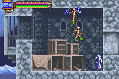
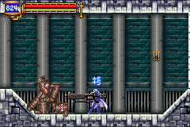

|
Soul
ในภาคนี้ Soma สามารถดูดพลังวิญญาณของศัตรูมาใช้ได้
โดยในการฆ่าศัตรูบางครั้งจะได้รับโซลของมันมา
และโซลสำคัญบางโซลจะได้จากแท่นที่เก็บโซล
* Note : หากต้องการได้รับโซลง่ายขึ้น ให้สวมใส่ Soul
Eater Ring
Type of Soul
โซลจะมีอยู่ทั้งหมด 4 ประเภทด้วยกัน คือ
สีแดง : ส่วนใหญ่จะเป็นโซลประเภทโจมตี
ใช้โดยการกด "บน" + "โจมตี"
สีฟ้า : เป็นโซลที่ยืมพลังของศัตรูมาใช้
(Guardian) ใช้โดยการกด "R"
ภาพโซลสีฟ้าแบบต่างๆ
(เรียก Guardian ออกมาโจมตี)
(Summon Guardina ออกมาปกป้อง)
(ยืมพลังของ Guardian เพื่อแปลงร่าง)
(Rare Guardian)
สีเหลือง :
เป็นโซลประเภทเสริมพลังต่างๆ เมื่อสวมใส่แล้วจะใช้โดยอัตโนมัติ
สีเทา : เป็นโซลที่ทำให้สามารถใช้ท่าพิเศษได้
เช่น Slide, Double Jump ...
* Note : โซลสีเทาจะอยู่ในหัวข้อ Ability
Soul for Good Ending

โซลที่จำเป็นสำหรับการจบแบบ Good Ending
สีแดง : (105) Flame Demon (พ่นลูกไฟ 3 ลูก)
เจอ Flame Demon ใน Zone : Cemetary ห้องแรกจากทางขวา
สีฟ้า : Giant Bat (แปลงร่างเป็นค้างคาว)
ได้ตามเนื้อเรื่อง หลังจากปราบ Boss :
Balore
สีเหลือง : (96) Succubus (เพิ่ม HP +5 เมื่อโจมตี)
(แกล้งทำเป็นผู้หญิงบาดเจ็บ)
หาได้จาก Succubus บริเวณ Zone : The Arena, Top Floor
เมื่อ Soma สวมใส่โซลเหล่านี้และสู้ชนะ Graham
เขาจะทราบว่า แท้จริงแล้วเขาคือ Dracula
Soul for Pass Waterfall
ใน Zone : Underground Resivoir จะมีน้ำตกอยู่
ซึ่งปรกติจะไม่สามารถผ่านไปได้ (WallSecretE)
จำเป็นต้องใช้โซล ที่สามารถแปลงร่างได้พุ่งผ่านเข้าไป
อีกทั้งจำเป็นต้องติดโซล Undine ด้วย เพื่อให้ลอยเหนือน้ำ
โซลที่แปลงร่างได้มี 3 อย่างด้วยกัน คือ
(44) Curly
เจอ Curly ได้ใน Zone : Inner Quarters
(49) Devil
เจอ Devil ได้ใน Zone : Clock Tower บริเวณที่ต้องลงน้ำด้านซ้าย
(55) Manticore

เจอ Manticore ได้ใน Zone : Floating Garden
Soul for Pass Chronomage
ห้องด้านซ้ายของห้อง Boss : Headhunter
จะมี Chronomage ซึ่งใช้นาฬิกาย้อนเวลา ทำให้ไม่สามารถผ่านเข้าไปได้ (WallSecretB)
หากมีโซล Galamoth ได้หลังจากปราบ Boss
: Legion
จะสามารถผ่านเข้าไปได้โดยไม่ถูกย้อนเวลา
Useful Soul
โซลที่มีประโยชน์ ใช้ได้ดีและใช้บ่อย มีดังนี้
สีแดง
(39) Nemesis
ทำให้ Soma ล่องหน หายตัวได้ ไม่โดนศัตรูโจมตี (65 MP)
เจอได้ที่ Zone : Inner Quarters
(60) Lightning Doll (สำหรับ Boss
Rush)

ปล่อยสายฟ้า (46 MP) รุนแรงพอประมาณ แต่โจมตีถี่
เจอได้ที่ Zone : Inner Quarters, Clock Tower, Underground Resivoir
(86) Killer Mantle
ใช้สลับ HP และ MP ของศัตรู
ใช้สำหรับฆ่า Iron Golem และ Red Minotaur โดยการโจมตีเพียงครั้งเดียว

(โจมตีลด 1 อย่างนี้ต้องใช้ Killer Mantle)
เจอได้ที่หน้าห้อง Save ใน Zone : The Arena
(89) Red Minotaur (สำหรับ Boss Rush)
แกว่งขวานขนาดยักษ์ (150 MP) รุนแรงมาก กวาดทั้งหน้าจอ
เจอได้ที่ Zone : The Arena, Top Floor
สีฟ้า
Black Panther (สำหรับ Boss Rush)
ไว้สำหรับพุ่งตัว (2 MP ต่อวินาที) เพื่อความรวดเร็วในการเล่น
ได้ตามเนื้อเรื่อง หลังจากปราบ Boss :
Graham
(20) Giant Ghost
เมื่อใช้แล้ว จะสะท้อนอาวุธยิงทั้งหลาย กลับไปยังผู้โจมตี
เจอได้ที่ Zone : Chapel
(58) Medusa Head (สำหรับ Boss Rush)
ทำให้หยุดกลางอากาศได้ (10 MP ต่อวินาที) สำหรับปราบ Balore
เจอได้ที่ Zone : Clock Tower
(78) Alura Une
ใช้เพิ่ม HP ครั้งละ 10 (60 MP ต่อวินาที)
เจอได้ที่ Zone : Underground Cemetary
สีเหลือง
(81) Flesh Golem
เมื่อติดตั้ง สามารถกิน Item ได้ทุกชนิด
ใช้สำหรับกิน "เนื้อเน่า" และ "นมหมดอายุ" ได้
เจอได้ที่ Zone : Underground Resivoir
(88) Gargoyle
เมื่อติดตั้ง จะป้องกันสถานะการเป็น "หิน" ได้
เจอได้ที่ Zone : Chapel, Underground Resivoir, The Arena, Top Floor, Forbidden
Area
(96) Succubus
(เพิ่ม HP +5 เมื่อโจมตีโดนศัตรูหรือสิ่งของ)
เจอได้ที่ Zone : The Arena, Top Floor
(100) Lubicant (สำหรับ Boss Rush)

ทำให้พลังโจมตีเพิ่มขึ้นตาม HP ที่ลดลงไป ยิ่ง HP น้อย ยิ่งโจมตีแรง
เจอได้ที่ Zone : The Arena, Top Floor
* Note : Lubicant จะ Drop ดาบ Muramasa ด้วย นำไปขายได้ในราคา 30,000G
102 Iron Golem
เมื่อติดตั้ง จะทำให้เมื่อโดนโจมตีแล้วจะไม่กระเด็น
หรือเมื่อชนศัตรูแล้วจะไม่กระเด็นกลับ สามารถเคลื่อนที่ผ่านไปได้
ใช้สำหรับเมื่อต้องการเคลื่อนย้ายผ่าน Zone ต่างๆ อย่างรวดเร็ว
โดยการใช้คู่กับโซล Black Panther จะสามารถพุ่งผ่านศัตรูต่างๆ ได้
แต่โซลนี้ไม่สามารถป้องกันการโจมตีได้
เจอได้ที่ Zone : Top Floor, Chaotic Realm
(107) Headhunter (Boss Soul ได้ตามเนื้อเรื่อง)
โซล Headhunter จะเพิ่มค่าพลังของ Soma ให้แทบทุกอย่าง ยกเว้นเพียง LCK เท่านั้น
หาก Soma สามารถสะสมโซลได้มากเท่าไหร่ โซล Headhunter ก็จะยิ่งเพิ่มพลังให้มากเท่านั้น
โดยหากสะสมครบ 16 โซล ค่าพลังก็จะบวก 1
ซึ่งโซลของศัตรูแต่ละชนิด สามารถเก็บได้สูงสุด 9 โซล
แต่โซลที่เกินมา ก็นับจำนวนลงไปในโซล Headhunter ด้วย
โดยรวมทั้งหมดแล้ว สามารถเพิ่มได้มากถึง +33 เลยทีเดียว
สถานที่เก็บโซลง่ายๆ คือที่ Zone : Underground Resivoir
บริเวณทางน้ำยาวๆ จะมีห้องให้กระโดดขึ้นไป
ภายในนั้นจะมี Merman อยู่มากมาย
ให้ใช้โซล Black Panther พุ่งชนให้หมด แล้วกลับเข้าไปใหม่
ทำซ้ำๆ กันจะทำให้สามารถสะสมโซลได้เป็นจำนวนมาก
|